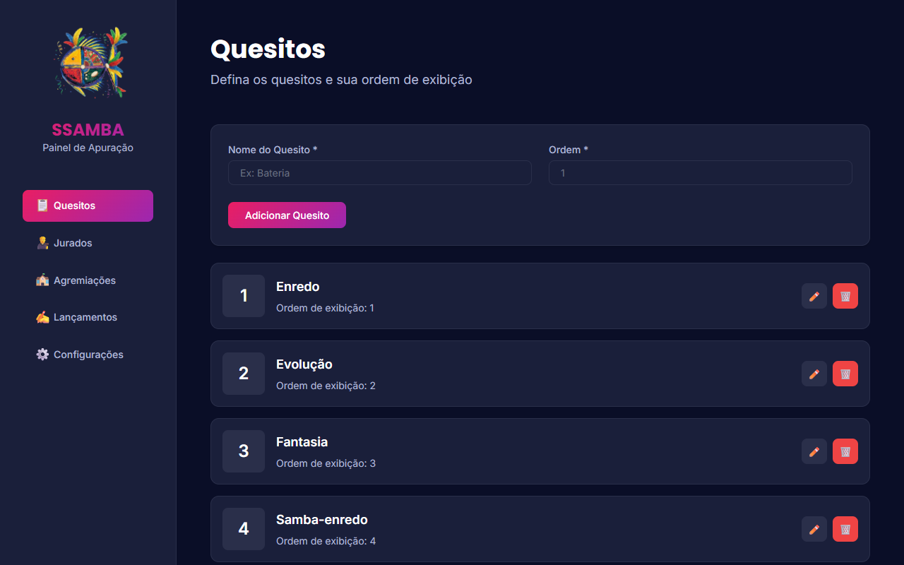
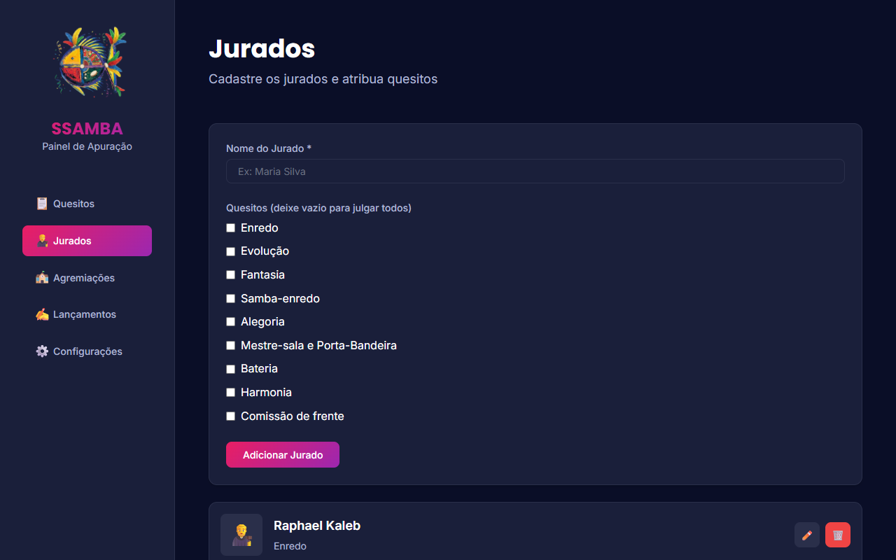
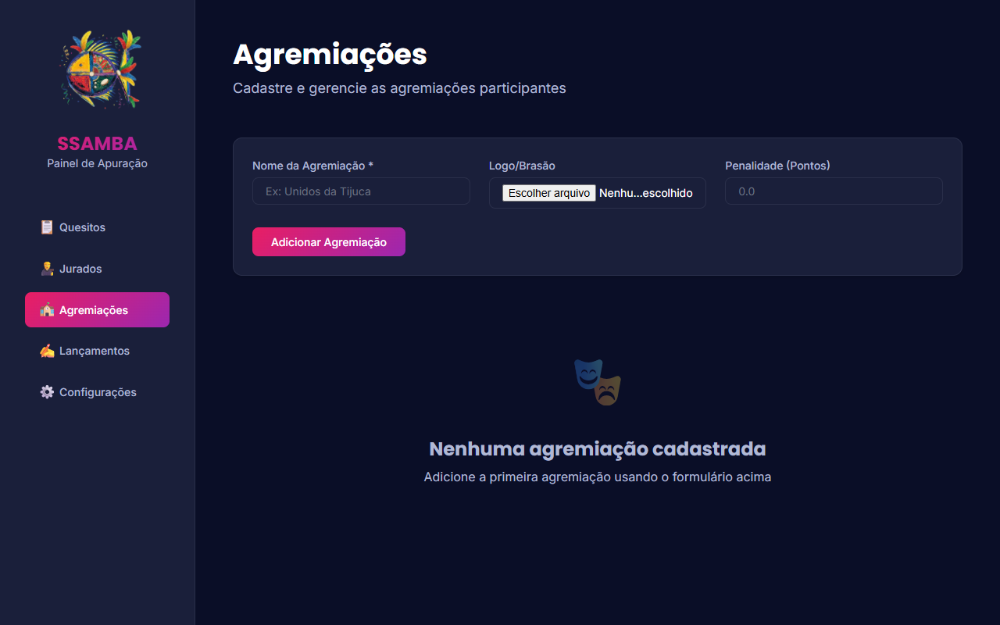
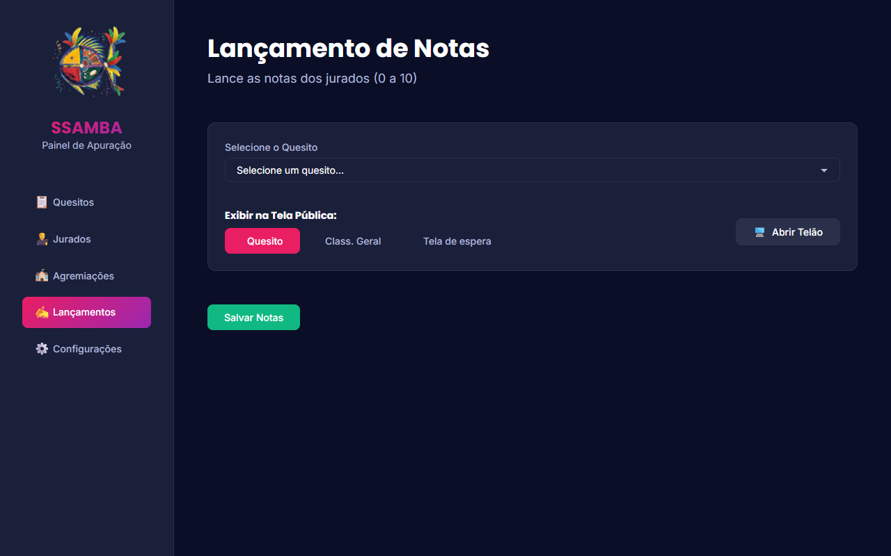
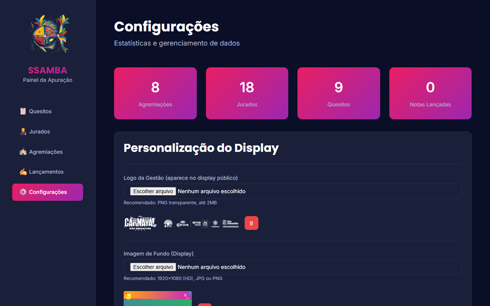

Bem-vindo ao SSAMBA, o sistema profissional de apuração de notas para escolas de samba. Este manual foi desenhado para guiar você passo a passo, desde a configuração inicial até a impressão do relatório final.
Antes de tudo, certifique-se de que o servidor está rodando.
iniciar_servidor.bat na Área de Trabalho.http://localhost:3000
Você tem duas formas de usar o sistema: Local (Cabo) ou Remoto (Wi-Fi).
A forma mais simples e segura.
Teclado do Windows + P e escolha Estender.F11 para ficar em tela cheia.Se a TV for Smart e estiver na mesma rede Wi-Fi que o notebook:
📡 Acesso na Rede: http://192.168.0.15:3000.Nota: O computador e a TV DEVEM estar conectados no mesmo roteador.
Siga esta ordem exata para configurar o evento.
Vá até a aba 📋 Quesitos. Aqui você define o que será julgado (ex: Bateria, Harmonia) e a ordem de leitura.

Dica: A ordem define a sequência de leitura das notas.
Vá até a aba 👨⚖️ Jurados.

Vá até a aba 🏫 Agremiações.

Esta é a tela que você usará durante todo o evento. Vá para a aba ✍️ Lançamentos.

No topo da tela de Lançamentos, você tem o controle total:
📋 Quesito: Mostra as notas do quesito atual (Use durante a leitura).🔢 Class. Geral: Mostra o ranking atualizado (Use nos intervalos).🖼️ Tela de espera: Mostra o logo do evento (Use antes de começar ou no final).9.8, 10). O sistema aceita ponto ou vírgula.Nota: O sistema calcula automaticamente o "Parcial" (soma do quesito) e o "Total" (soma geral).
O público verá uma interface limpa e animada.
Ao terminar a apuração:
Ctrl + P para salvar como PDF ou imprimir.
| Problema | Possível Causa | Solução |
|---|---|---|
| TV não conecta no servidor | Firewalls ou redes diferentes. | Certifique-se que o PC e a TV estão no mesmo Wi-Fi. Se não funcionar, use o Cabo HDMI (Opção A). |
| Endereço da rede não aparece | Servidor antigo ou erro. | Abra o iniciar_servidor.bat novamente e procure por Acesso na Rede. |
| Telão não abre | Bloqueador de pop-ups do navegador. | Olhe na barra de endereço (ícone de x) e permita pop-ups para este site. |
| Nota errada lançada | Erro de digitação. | Volte na célula errada, digite a nova nota e dê ENTER. O sistema corrige automaticamente. |
| Sistema travou | Servidor fechado ou internet. | Verifique se a janela preta do servidor está aberta. Se fechou, abra o
iniciar_servidor.bat de novo. Recarregue a página (F5). Os dados NÃO serão
perdidos. |
| Imagem não carrega | Imagem muito pesada ou formato inválido. | Use imagens JPG ou PNG, de preferência leves (menos de 2MB). |
| Contraste ruim no telão | Imagem de fundo muito clara. | Em Configurações, troque o fundo por uma imagem mais escura para as letras brancas aparecerem bem. |
| Empate no final | Critérios não definidos. | Em Configurações > Critérios de Desempate, arraste os quesitos para definir a ordem de prioridade. |
Dica de Ouro: Teste a conexão com a TV antes do evento começar. Se usar Wi-Fi, cuidado com oscilações. Cabo HDMI é sempre mais seguro!
Bom trabalho e bom carnaval! 🎉